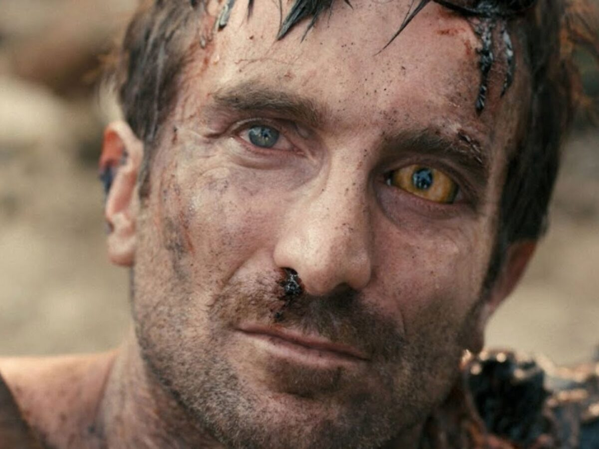

La película aborda la alteridad a partir de la construcción inicial del “otro” como amenaza. Los extraterrestres, definidos por su diferencia física y cultural, son objeto de miedo, rechazo y simplificación. El uso de un lenguaje despectivo —como “prawns”— cumple una función central en este proceso: reduce al otro a una categoría inferior y habilita su deshumanización. Nombrar, en este sentido, es ejercer poder. Sin embargo, el relato complejiza esta mirada al presentar a los alienígenas como sujetos con organización, inteligencia y afectividad, desarmando el discurso dominante y obligando al espectador a revisar sus propios prejuicios. El encuentro con el otro se vuelve entonces una experiencia de crisis, que pone en tensión las categorías con las que se organiza la realidad y plantea la alteridad como un espejo que interpela.

En este marco, el cuerpo de Wikus van de Merwe se convierte en el espacio donde ese conflicto se vuelve tangible. Su transformación progresiva —física, pero también simbólica— desestabiliza su identidad y lo desplaza de una posición de privilegio hacia una de exclusión. El cuerpo deja de ser un soporte estable para convertirse en un territorio en disputa, atravesado por el dolor, la vulnerabilidad y el control institucional. A medida que pierde su condición humana, gana conciencia, invirtiendo la lógica que asocia humanidad con ética. Perseguido, analizado y explotado, su cuerpo evidencia cómo el sistema opera sobre lo biológico para extraer valor. Así, la transformación de Wikus no solo narra un cambio individual, sino que expone el pasaje de opresor a oprimido, revelando que la diferencia no es un dato natural, sino una construcción que organiza jerarquías y legitima desigualdades.